Opening pilot: one shot, start to finish
We test the new process on one shot before anything else: staging note, a short prompt that names only what is visible, a few cloud candidates, my check against the staging list, then your pick. After you pick, I animate just this shot (depth parallax, a few seconds, at its place in the song, 3.6 s) and show it, so you can judge the whole pipeline on one shot. Pilot spend: about $1.10 of Replicate (ledger in tools/spend.json). Click an image to see it full size.
Pilot animation: your master, animated (3.2 s at 3.6 s in the song)
Your approved master (monorail-bay-ref2), upscaled 2x locally, with a depth map from Depth Anything V2. The camera pushes slowly toward the city while the depth parallax slides the near beam and train against the far sea and skyline; glints on the water change on 2s; a white flash on the cut. It plays two bars here so the motion can be judged; in the full edit the shot is one bar. Live version (plays this part of the song): index.html (press R for the review bar).
My frame check: no tearing at the depth edges (train, pillars, beam), pillars stay straight, the train doesn't warp, motion is even from frame to frame. Weak: the parallax is gentle, so it reads more as a camera push than as depth; the train itself does not move along the beam.
Earlier pilot candidates (superseded by your master): shot 2: the monorail over the bay, heading into the city
| Story beat | He is on his way to the island he is moving to: the train heads into the city. |
|---|---|
| Script moment | Intro, 3.6 s, right after the sky: first sight of the train and the city. |
| Where in the world | The train sits on a concrete guideway beam on pillars in the bay; the beam runs on to the island city, which is where the train is going. |
| Camera | High above the bay, off to the side of the route, looking across the curve toward the city. |
| Height and scale | Beam about 15 m above the water; the train is small in a wide frame; horizon at about 40% from the top. |
| In front of the lens | Sea; the beam curving from the lower left across the water to the city on the right horizon; a four-car train on the beam in the lower left; the city of glass towers. |
| Behind the camera | The mainland (not prompted). |
| Motion | The train moves along the beam toward the city (animated as a slow drift; the picture shows the driver's cab at the city end). |
| Light | Early morning, low sun just above the horizon, left of the city. |
| Physical sense | Train on top of the beam, both ends visible, driver's cab toward the city, pillars under the beam, the beam continuous to the island, no boats, no mountains, no second track. |
Prompt for pilot-a (GPT Image 2, with our line sketch tools/promptlab_guides/bay-lines.png attached as the layout):
Then one edit of that image (GPT Image 2):
First-round prompt (every model; it named the front car only as "rounded front car at the right end", which the models ignored):
Candidates
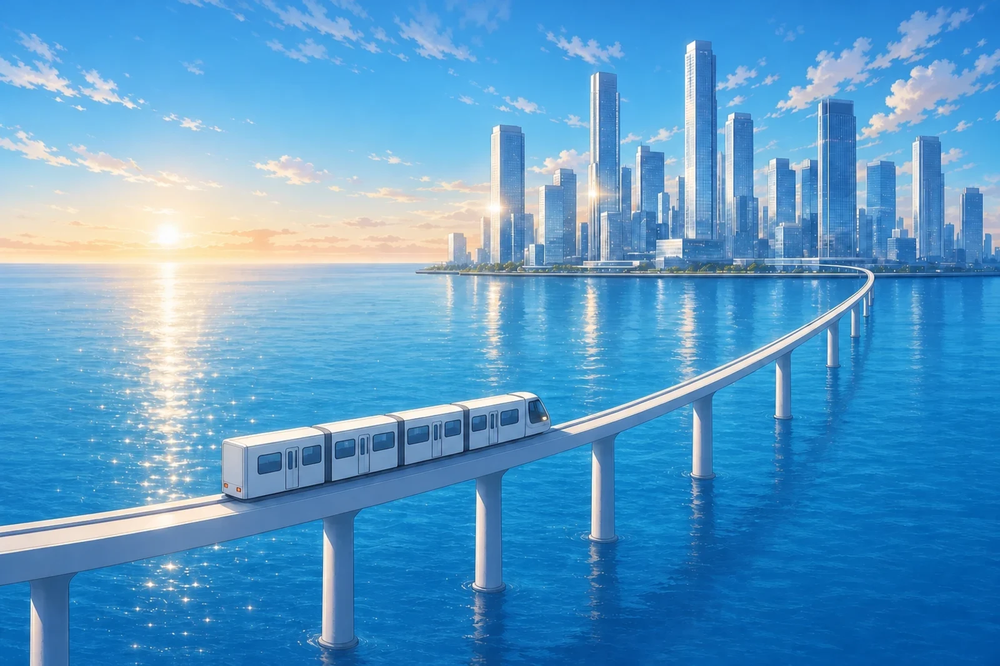
Passes every check: cab at the right end facing the city, flat back with tail lights at the left, four cars on top of the beam, pillars under it, beam continuous to the island, no boats or mountains. Made in two steps: GPT Image 2 from the prompt plus our line sketch (it drew the cars without windows), then one GPT Image 2 edit that added windows and doors. 1536×1024; would be upscaled locally.
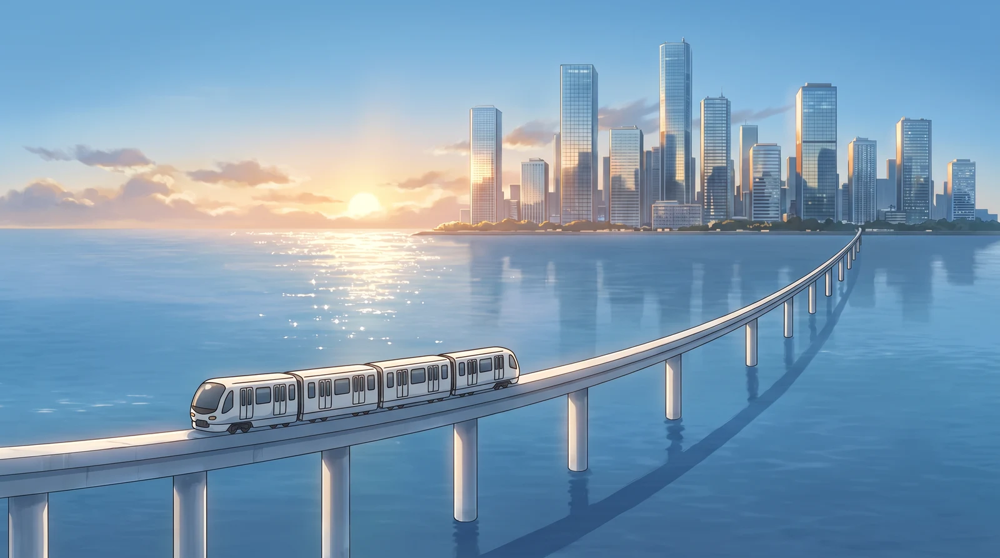
Fails direction: the driver's cab is at the lower-left end, so the train drives away from the city. Shown because it is the closest to your reference in look. Two edits and a re-prompt could not turn the train around.
Direction right (front at the right end), but the pillars stand in front of the beam instead of under it.
Every image the pilot made (12, four models)
The hard part was the direction of the train: most models put the driver's cab at the lower-left end, driving away from the city, whatever the prompt said.
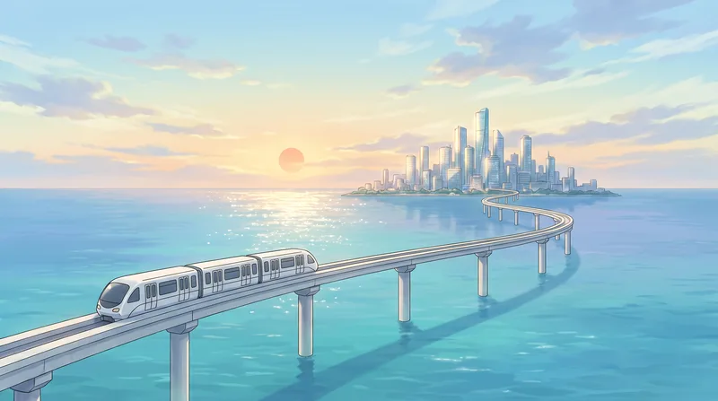
cab at the lower left (away from the city)
cab at the lower left
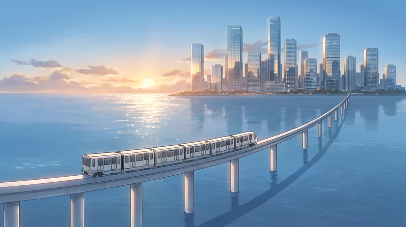
unchanged: cab still at the lower left
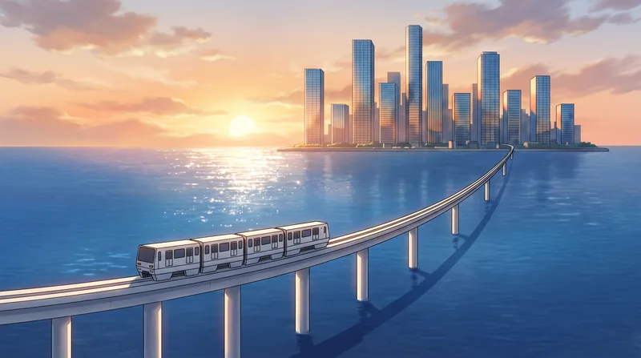
cab still at the lower left
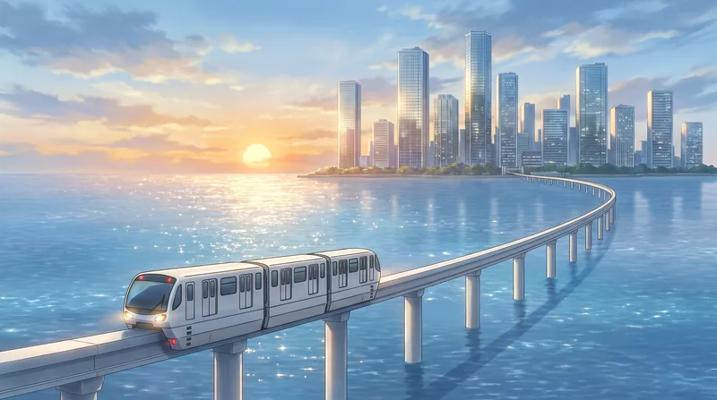
cab still at the lower left
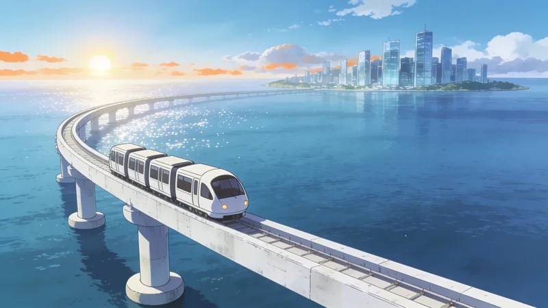
train coming toward camera, away from the city; rails on the beam
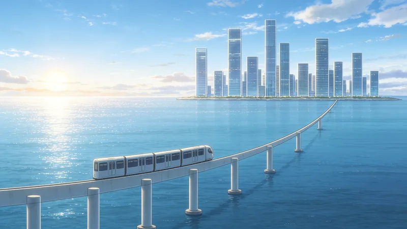
direction right; pillars in front of the beam
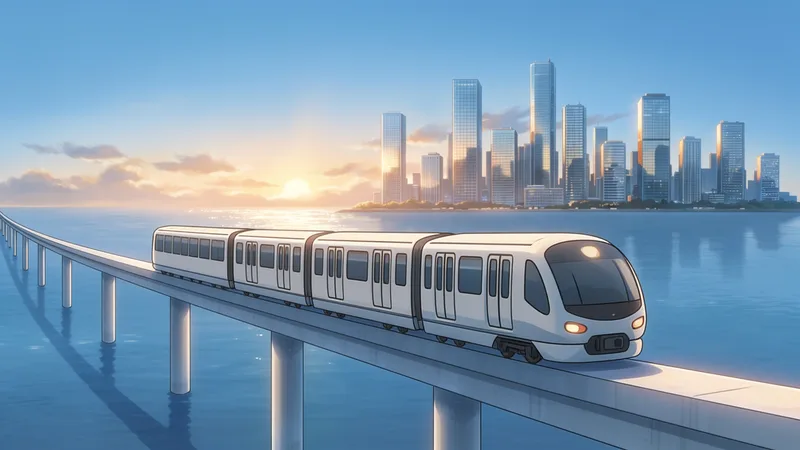
redrew the whole picture; train leaves the beam
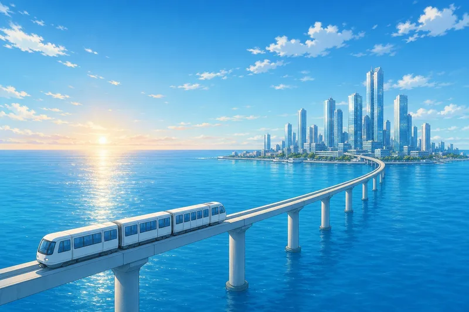
cab at the lower left
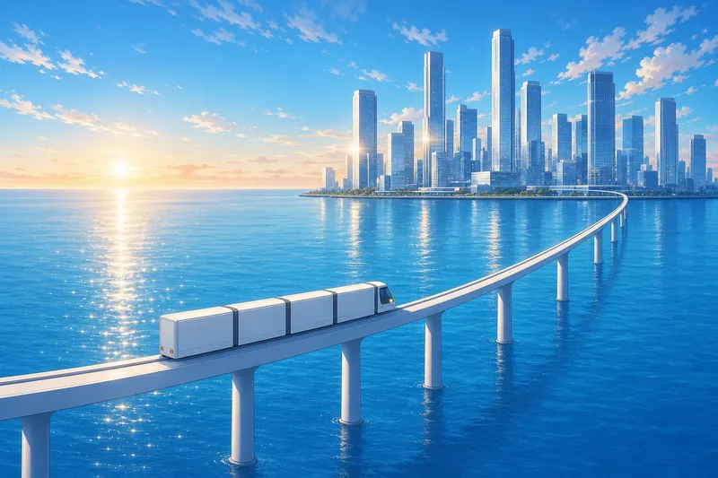
direction right; cars have no windows (reads as freight)
passes
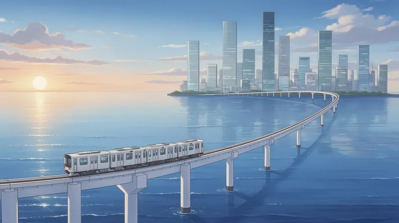
cab at the left; ordinary railway train
Price per image: Replicate and OpenRouter
| Model | Replicate | OpenRouter | In this pilot |
|---|---|---|---|
| GPT Image 2 (medium) | ~$0.06 (our ledger estimate; billed by tokens) | $0.006–0.0135 at 1024², billed by tokens ($8 / $30 per 1M) | Only model that put the cab toward the city (with the sketch). Clean, bright, a bit flat. |
| Nano Banana Pro (Gemini 3 Pro Image) | $0.15 at 1K–2K, $0.30 at 4K | $0.134 | Closest to the reference look (soft light, painterly). Ignored the train direction five times. |
| Seedream 4.5 | $0.04 | $0.04 | Good 2560×1440 output; spatial errors (pillars, rails); edits redraw everything. |
| Seedream 5.0 Pro | $0.045–0.09 | $0.09 | Not tested. |
| FLUX.2 Pro | $0.03 + $0.015 per reference image | $0.03 | Wrong train type and direction. |
| Nano Banana 2 (Gemini 3.1 Flash Image) | about $0.04–0.07 | $0.067 | Not tested. |
OpenRouter prices are from its own comparison of 11 September 2026 (1024×1024, default settings); ours are 3:2 or 16:9 and may cost more. GPT Image 2 is billed by tokens on both, so its price moves with size and quality. Replicate prices are from Replicate's model pages and our spend ledger. Using OpenRouter needs an API key set up for the tools.
Revised shot list for the whole opening (89.6 s)
Written, not rendered. Inside the train we only look out of a side window; progress toward the island is shown from outside. Highlighted rows need a new cloud master (five in all); everything else is already picked, drawn in code, an approved sprite, or made locally from an approved master.
| # | Time | Lyric | Source | What we see, staging, prompt |
|---|---|---|---|---|
| 1 | 0.0–3.6 | picked: sky-tall-12 | Morning sky, tilt down to the sea horizon and the sun. Camera high over the bay facing the sunrise; nothing but sky, sun and sea. Tilt on the tall plate, slow cloud parallax, flare as the sun enters. | |
| 2 | 3.6–5.2 | cloud master (PILOT) | The monorail on its curving beam over the bay, heading into the island city. Camera high above the bay, off to the side; beam on pillars curves from lower left to the city on the right horizon; four-car train on the beam, driver's cab at the right end (toward the city), flat back at the left; sun low left of the city. See the pilot section above. | |
| 3 | 5.2–6.8 | picked: oncoming2-216 | Low angle, the train comes over us. Camera at a pillar foot looking back along the beam; the city is behind the camera. Roll and push, speed lines. Needs the straight-line cloud repeat painted out (local). | |
| 4 | 6.8–8.4 | derived from shot 2 | Outside, the carriage side sliding past, sun in its windows. Camera level with the beam, square-on to one carriage; the car fills the frame end to end. img2img from our approved exterior master: "showing a view looking directly at one carriage from the side, carriage covering the image end to end, window reflecting only sea and sky." | |
| 5 | 8.4–11.6 | picked: mc-window2-266 | Him at the side window, sea far below. Side view only: sea and sky out of the window; no track visible. Slow push, light sweep across his face. | |
| 6 | 11.6–12.8 | drawn | Small 天川 logo flash and the first staff credit. Over a soft crop of shot 1. No "opening theme" label. | |
| 7 | 12.8–16.0 | 朝のモノレール 窓の外 | picked: mc-window2-266 (closer) | Closer on him; pillar shadows pass on the beat. Same camera, tighter crop; shadows move in the direction of travel. Credit: story. |
| 8 | 16.0–18.8 | derived from shot 2 | The train on the beam, closer. Crop of the master toward the train, repainted at 0.35–0.5. Glints on the water on the beat. | |
| 9 | 18.8–21.2 | 知らない街が 光ってる | derived from shot 2 | The city across the water, shining. Crop of the master toward the city, repainted. Glints on the glass on the beat. Credit: art. |
| 10 | 21.2–24.4 | cloud master | The train entering the island between the first towers. Camera outside at the island edge, facing along the route inland; the train comes toward the camera onto the island, the sea behind it. A white four-car monorail train on a concrete beam between glass office towers, its driver's cab toward the camera. Behind it the beam runs back over the sea. Early morning, low sun. | |
| 11 | 24.4–27.6 | ポケットに IDカード | drawn | The ID card rises out of his pocket, rack focus, glint. Drawn card over a blurred crop of shot 5. His photo from the approved sprite. |
| 12 | 27.6–29.2 | drawn | The phone's new-hire app: ようこそ, the island map, his dorm. Phone looks like a phone; no odd shapes. Redo the map without the circle. | |
| 13 | 29.2–31.6 | cloud master | Arrival: the station platform, the train stopped, doors open. Camera on the platform, square-on to the train; platform doors open; sky above the roof. A white monorail car stopped at an elevated station platform, glass platform doors and the car doors open, bright empty interior, tiled floor with a yellow tactile strip, a white steel canopy, blue morning sky. | |
| 14 | 31.6–34.0 | 今日からここで 働くよ | picked location: gate-lobby-2103 | The security gate; the card taps, the light goes teal. Approved gate plate; drawn card and glow. Credit: song. |
| 15 | 34.0–35.6 | cloud master | He looks up: a glass tower rising into the morning sky. Camera at street level looking straight up one tower; the top inside the frame with sky above. Looking straight up the side of one glass office tower to a clear morning sky, the top of the tower inside the frame, white clouds, low sun catching the glass. | |
| 16 | 35.6–37.2 | sprite (needs approval: eyes-open variant) | His face, eyes up; white flash on the chorus. Approved design; eyes repainted open. | |
| 17 | 37.2–40.4 | はじめまして 新しい街 | cloud master | The reveal: the whole island company city from the water. Camera low over the water facing the island; beam curves in from the left; sun low; no train. A man-made island city of glass office towers seen from low over a calm bay, an elevated concrete monorail beam on pillars curving in from the left foreground to the island, low morning sun, sunlight glitter on the sea. |
| 18 | 40.4–42.0 | picked: oncoming2-216 | The train overhead again, whip. Speed lines, whip pan out. | |
| 19 | 42.0–43.6 | sprite | Pose reveal: the new hire. Graphic card. | |
| 20 | 43.6–47.6 | 言葉が僕の 魔法になる | sprite + drawn | ことば and まほう draw themselves in light around him. Graphic, dark teal. |
| 21 | 47.6–50.0 | drawn | A stream of glowing kana wipes the frame. | |
| 22 | 50.0–53.2 | 小さな「手伝って」で | picked location: copyroom-copier-4203 | The copy room: てつだって glows, the copier wakes, pages fly. Approved copy room. |
| 23 | 53.2–56.8 | sprite | Emi through flying paper. Graphic card. | |
| 24 | 56.8–59.6 | 世界が少し 動き出す | derived from approved plates | Beat montage: gate, copier, train, glints: things start to move. |
| 25 | 59.6–62.8 | shot 2 | Wide again, pulling back. | |
| 26 | 62.8–66.0 | picked: mc-window2-266 | Him at the window; light washes the frame. | |
| 27 | 66.0–68.4 | 地下の部屋に ゲームの音 | location (the basement office is being redone) | The basement office. Wait for the approved basement office. |
| 28 | 68.4–70.8 | sprite | Mio with monitor light changing on the beat. Graphic card with screen glow. | |
| 29 | 70.8–72.8 | リーダーは笑って「いいね」って | sprite | Emi laughs, いいね pops. Graphic sunburst. |
| 30 | 72.8–78.8 | sprite | Rei. Graphic card. | |
| 31 | 78.8–83.6 | 世界が少し 動き出す | sprites | The cast in two rows against the sunrise, silhouettes filling with colour on the beat. |
| 32 | 83.6–86.8 | picked: sky-tall-12 | Tilt up into the sky. | |
| 33 | 86.8–89.6 | drawn | 天川 / AMAKAWA logo on the last downbeat, staff-style credits, hold, fade. |